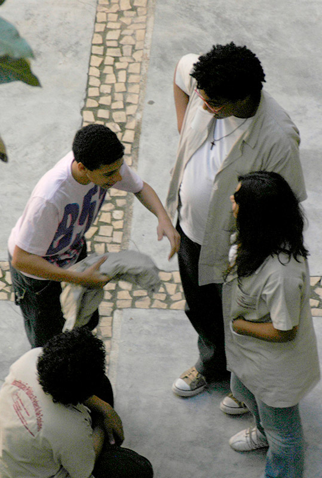
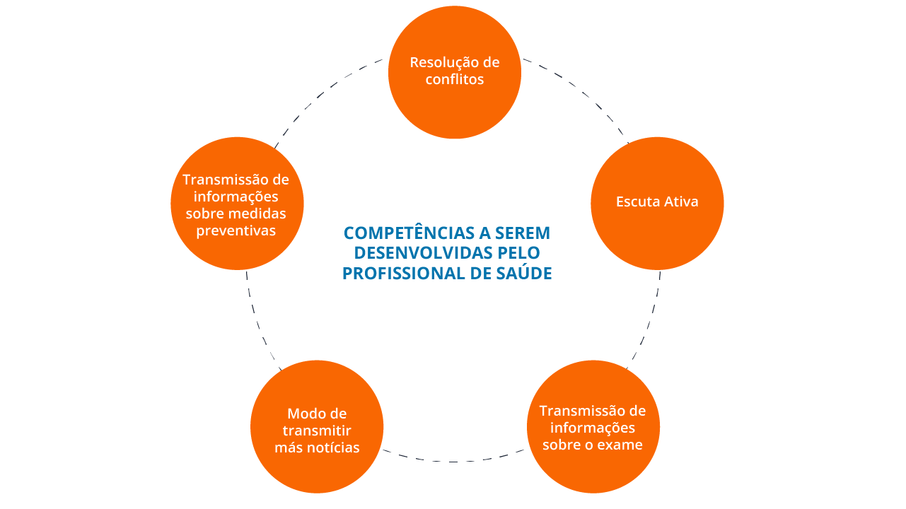

Coriolano-Marinus et al. (2014) afirmam que o processo comunicativo se define como um ato caracterizado por atitudes que envolvem a sensibilidade, a aceitação e a empatia entre os sujeitos. Desse modo, além da clareza e objetividade na transmissão de uma informação, é importante a demonstração de interesse pelo outro, bem como levar em consideração o contexto social e cultural dos sujeitos e seus saberes.
Módulo 4 | Aula 1 A comunicação em saúde e estratégias para melhoria na APS
Tópico 3
Estratégias de comunicação na APS e a Literacia para a Saúde

Uma vez que a APS é responsável por oferecer atenção integral o mais próximo possível do ambiente cotidiano dos indivíduos, famílias e comunidades, estimulando o cuidado da sua própria saúde e da saúde de outras pessoas, as estratégias de comunicação são essenciais para a abordagem de ações para promoção da saúde. Quando tratamos da comunicação em saúde, é preciso considerar que nessa área, como ressalta Cardoso (2000), as necessidades são amplas e diversificadas, devendo ir além das informações sobre doenças e suas formas de prevenção.
Na APS, o profissional de saúde é a primeira porta de condução do usuário para o serviço de saúde e, por isso, necessita de maior instrumentalização para despertar o vínculo e capacidade de se relacionar. Considerando as complexidades das relações, é importante que seja propiciado um canal de comunicação horizontal entre o profissional e o usuário.
Ativar essa comunicação é uma tarefa que envolve a LS deste profissional que, cônscio das suas habilidades deverá eleger as melhores estratégias para que cada pessoa seja capaz de perceber as suas necessidades de saúde, para motivar a gestão da informação necessária para a tomada de decisões, para aprender e aproveitar os resultados consequentes das suas próprias escolhas. (FREITAS, COSTA, SANTOS e ARRIAGA, 2019; SOUSA et al., 2021).
Especialmente nos cuidados de saúde em APS, conhecer o nível de LS torna-se cada vez mais necessário, pois propicia às pessoas e aos sistemas de saúde uma compreensão de suas necessidades e a capacidade de gestão de seus investimentos em saúde. Além disso, a LS é capaz de promover uma comunicação mais eficaz entre o sistema de saúde e o cidadão, de modo a facilitar a compreensão da sua condição clínica e a participação na escolha da terapêutica a ser adotada. Clique nas setas para saber mais.
No que se refere ao profissional de saúde, uma comunicação clara, objetiva e eficaz é sinônimo de diminuição de erros, melhora na qualidade do serviço prestado e consequentemente um atendimento seguro em saúde.
Mas para isso é crucial que todos os membros da equipe de saúde estejam envolvidos na discussão construtiva de informações de saúde baseada na responsabilidade e no treino educativos destes profissionais que, neste caso, serão a fonte de credibilidade da informação de saúde que o usuário irá receber (SILVA, 2017, p. 30).
Uma ferramenta crucial na tarefa de transmitir informações aos usuários dos serviços de saúde é a linguagem simples. Os profissionais de saúde precisam estar atentos à utilização de uma linguagem que facilite a compreensão, por exemplo, dos conteúdos de uma bula de remédio, das instruções de exames, das prescrições do tratamento ou até mesmo dos nomes das doenças.
Enfim, é preciso transformar conhecimentos e termos especializados em informações acessíveis para todos, de modo que, se apropriando dessas informações, os usuários desenvolvam competências para o autocuidado, a prevenção de doenças e a promoção de sua saúde.
Na perspectiva de promover melhorias na comunicação e nas relações entre profissionais da saúde e os usuários, se faz necessário que as competências de comunicação de ambos sejam desenvolvidas. As competências a serem desenvolvidas nos profissionais, por meio da ampliação de sua formação, segundo Teixeira (2004) podem ser assim caracterizadas:

Segundo Araújo e Silva (2012), a utilização da escuta ativa requer concentração e energia por parte do profissional. É um processo que envolve a emissão consciente de expressões faciais, postura corporal e aproximação física que denotam interesse no que está sendo dito. Além desses aspectos, referentes à dimensão não verbal da comunicação, a escuta ativa envolve o uso terapêutico do silêncio, bem como de expressões verbais que encorajam a continuidade da fala, como, por exemplo: “e então...", “continue...", "estou te ouvindo…”, entre outras.
No que diz respeito às competências dos usuários, Teixeira (2004) destaca: aumentar o nível de participação nos serviços de saúde, incentivar a fazer uma lista do que querem falar ou perguntar, de modo que se tornem mais proativos na busca de informação sobre saúde.
É importante ainda que a comunicação em saúde, no contexto da APS, não seja coercitiva, moralizante ou autoritária. Ao contrário, ela deve potencializar no usuário a capacidade de apreensão e compreensão do processo saúde/doença, e de gestão das possibilidades interventivas de tratamento, tornando-o um agente multiplicador do conhecimento em saúde.
A fim de promover melhorias da APS e atingir mudanças de hábitos e adoção de comportamentos mais saudáveis, é importante que as ações de comunicação em saúde considerem os seguintes pontos:
- A presença de profissionais da comunicação nas unidades de saúde é sempre desejável, e a comunicação deve fazer parte do planejamento estratégico em saúde, com garantia de recursos;
- Os profissionais de saúde devem atuar como porta-vozes da ciência e da saúde pública sem, no entanto, assumir uma posição de autoridade e hierarquia;
- O processo de escuta é essencial para definir os objetivos da ação e modular a linguagem que será usada, uma vez que permitirá identificar os anseios;
- As ações de comunicação em saúde não devem ter como foco apenas obter visibilidade na mídia, mas sim estabelecer relações menos hierarquizadas e mais dialógicas com os indivíduos;
- Experiências inovadoras devem ser compartilhadas, de modo a inspirar outras ações (uma busca em portais como o ideiaSUS ou a Rede Humaniza SUS pode trazer resultados interessantes).